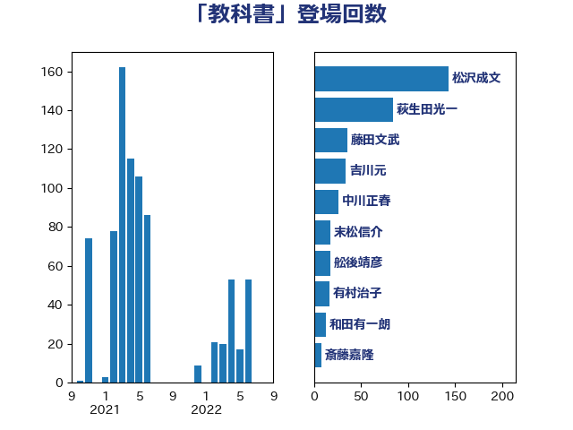

単語「教科書」

| 松沢成文 | 日本維新の会 | 143 回 |
| 萩生田光一 | 自由民主党 | 84 回 |
| 藤田文武 | 日本維新の会 | 36 回 |
| 吉川元 | 立憲民主党 | 34 回 |
| 中川正春 | 立憲民主党 | 26 回 |
| 末松信介 | 自由民主党 | 18 回 |
| 舩後靖彦 | れいわ新選組 | 18 回 |
| 有村治子 | 自由民主党 | 17 回 |
| 和田有一朗 | 日本維新の会 | 13 回 |
| 斎藤嘉隆 | 立憲民主党 | 8 回 |
| 白石洋一 | 立憲民主党 | 8 回 |
| 笠浩史 | 無所属 | 8 回 |
| 丹羽秀樹 | 自由民主党 | 6 回 |
| 佐々木さやか | 公明党 | 6 回 |
| 谷公一 | 自由民主党 | 6 回 |
| 柴田巧 | 日本維新の会 | 5 回 |
| 高木啓 | 自由民主党 | 5 回 |
| 吉良よし子 | 日本共産党 | 4 回 |
| 岸田文雄 | 自由民主党 | 4 回 |
| 馬場伸幸 | 日本維新の会 | 4 回 |
| 高木かおり | 日本維新の会 | 4 回 |
| 鰐淵洋子 | 公明党 | 4 回 |
| 吉良州司 | 無所属 | 3 回 |
| 嘉田由紀子 | 無所属 | 3 回 |
| 川田龍平 | 立憲民主党 | 3 回 |
| 木原稔 | 自由民主党 | 3 回 |
| 浮島智子 | 公明党 | 3 回 |
| 石井苗子 | 日本維新の会 | 3 回 |
| 西田昌司 | 自由民主党 | 3 回 |
| 高橋千鶴子 | 日本共産党 | 3 回 |
| 上野通子 | 自由民主党 | 2 回 |
| 伊波洋一 | 無所属 | 2 回 |
| 前川清成 | 日本維新の会 | 2 回 |
| 勝部賢志 | 立憲民主党 | 2 回 |
| 吉田宣弘 | 公明党 | 2 回 |
| 土屋品子 | 自由民主党 | 2 回 |
| 塩田博昭 | 公明党 | 2 回 |
| 寺田学 | 立憲民主党 | 2 回 |
| 小田原潔 | 自由民主党 | 2 回 |
| 志位和夫 | 日本共産党 | 2 回 |
| 森山浩行 | 立憲民主党 | 2 回 |
| 池畑浩太朗 | 日本維新の会 | 2 回 |
| 深澤陽一 | 自由民主党 | 2 回 |
| 落合貴之 | 立憲民主党 | 2 回 |
| 谷田川元 | 立憲民主党 | 2 回 |
| 道下大樹 | 立憲民主党 | 2 回 |
| 上月良祐 | 自由民主党 | 1 回 |
| 中西祐介 | 自由民主党 | 1 回 |
| 仁木博文 | 無所属 | 1 回 |
| 伊藤孝恵 | 国民民主党 | 1 回 |
| 伴野豊 | 立憲民主党 | 1 回 |
| 勝目康 | 自由民主党 | 1 回 |
| 古屋範子 | 公明党 | 1 回 |
| 坂本哲志 | 自由民主党 | 1 回 |
| 塩村あやか | 立憲民主党 | 1 回 |
| 大塚耕平 | 国民民主党 | 1 回 |
| 大西健介 | 立憲民主党 | 1 回 |
| 宮本徹 | 日本共産党 | 1 回 |
| 小泉進次郎 | 自由民主党 | 1 回 |
| 小西洋之 | 立憲民主党 | 1 回 |
| 小里泰弘 | 自由民主党 | 1 回 |
| 小野泰輔 | 日本維新の会 | 1 回 |
| 山口那津男 | 公明党 | 1 回 |
| 山添拓 | 日本共産党 | 1 回 |
| 岸信夫 | 自由民主党 | 1 回 |
| 平木大作 | 公明党 | 1 回 |
| 平林晃 | 公明党 | 1 回 |
| 徳永久志 | 立憲民主党 | 1 回 |
| 斉藤鉄夫 | 公明党 | 1 回 |
| 末松義規 | 立憲民主党 | 1 回 |
| 杉本和巳 | 日本維新の会 | 1 回 |
| 枝野幸男 | 立憲民主党 | 1 回 |
| 梅谷守 | 立憲民主党 | 1 回 |
| 浜田聡 | NHK党 | 1 回 |
| 田村智子 | 日本共産党 | 1 回 |
| 磯崎仁彦 | 自由民主党 | 1 回 |
| 福島伸享 | 無所属 | 1 回 |
| 米山隆一 | 立憲民主党 | 1 回 |
| 舟山康江 | 国民民主党 | 1 回 |
| 茂木敏充 | 自由民主党 | 1 回 |
| 菅義偉 | 自由民主党 | 1 回 |
| 西村智奈美 | 立憲民主党 | 1 回 |
| 足立康史 | 日本維新の会 | 1 回 |
| 逢坂誠二 | 立憲民主党 | 1 回 |
| 青柳仁士 | 日本維新の会 | 1 回 |
| 馬場雄基 | 立憲民主党 | 1 回 |
| 高見康裕 | 自由民主党 | 1 回 |